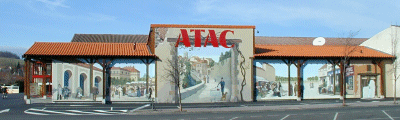
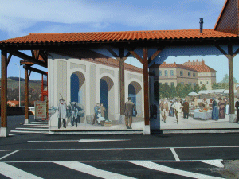
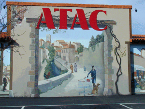
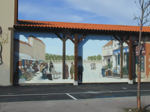

|
Un mur uniforme et sinistre près de centre de
Billom est remplacé par une reconstitution
d'histoire locale ; 9 mois d'études ont
été nécessaires à ce projet qui
n'est pas totalement réalisé, des ennuis
techniques ont stoppé l'exécution de la partie
droite de la fresque. Promis ! je retournerai photographier
la suite !

|

|

|

|
 
|